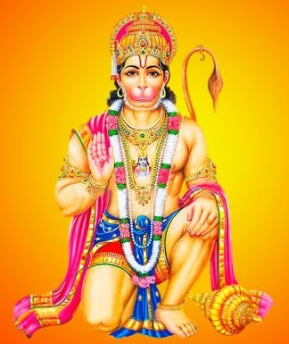

Hanuman Chalisa
Author: Tulasi das
*** Doha ***
Sri guru charan sarooja raj
nija manu mukura sudhari |
varanau raghuvara vimalayasa
jo dayaka phalacari ||
Buddhihina tanujanikai
sumirau pavana kumara |
bala-buddhi vidya dehu mohi
harahu kalesa vikar ||
*** Chopai ***
Jai hanuman gyan guna sagar |
jai kapis tihu loka ujagar ||
Ramaduta atulita baladhama |
anjani putra pavanasuta nama ||
Mahavira vikrama bajarangi |
kumati nivara sumati ke sangi ||
Kanchan varana viraja suvesa |
kanana kunḍala kuncita kesa ||
Hathavajra aur dhvaja virajai |
kanthe munja janevū sājai ||
Sankara suvana kesari nandana |
teja pratāpa mahajaga vandana ||
Vidyavana guṇi ati catura |
rama kaja karive ko atura ||
Prabhu caritra sunive ko rasiya |
ramalakhana sita mana basiya ||
Sukṣma rupadhari siyahi dikhava |
vikaṭa rupadhari lanka jarava ||
Bhima rupadhari asura saṃhare |
ramacandra ke kaja saṃvare ||
Laya sanjivana lakhana jiyaye |
srī raghuvira haraṣi uralaye ||
Raghupati kinhi bahuta baḍayi |
tuma mama priya bharatahi sama bhayi ||
Sahasa vadana tumharo yasagavai |
asa kahi sripati kaṇṭha lagavai ||
Sanakadika brahmadi munisa |
narada sarada sahita ahisa ||
Yam kubera digapala jahaṃ te |
kavi kovida kahi sake kahaṃ te ||
Tuma upakara sugrivahi kinha |
rama milaya rajapada dinha ||
Tumharo mantra vibhiṣaṇa mana |
lankesvara bhaye saba jaga jana ||
Yuga sahasra yojana para bhanu |
leelyo tahi madhura phala janu ||
Prabhu mudrika meli mukha mahi |
jaladhi langhi gaye acaraja nahi ||
Durgama kaja jagata ke jete |
sugama anugraha tumhare tete ||
Rama duare tuma rakhavare |
hota na agya binu paisare ||
Saba sukha lahai tumhari sarana |
tuma raksaka kahu ko ḍara na ||
Apana teja tumharo apai |
tino loka hake te kampai ||
Bhuta pisaca nikaṭa nahi avai |
mahavīra jaba nama sunavai ||
Nasai roga harai saba pira |
japata nirantara hanumata vira ||
Sankaṭa sem hanumana churavai |
mana krama vacana dhyana jo lavai ||
Saba para rama tapasvi raja |
tinake kaja sakala tuma saja ||
Aura manoradha jo koyi lavai |
tasu amita jivana phala pavai ||
cāro yuga paritāpa tumhārā |
hai parasiddha jagata ujiyara ||
Sadhu santa ke tuma rakhavare |
asura nikandana rama dulare ||
asṭhasiddhi nava nidhi ke datha |
asa vara dīnha jānakī mātā ||
Eama rasayana tumhare pasa |
sada raho raghupati ke dasa ||
Tumhare bhajana ramako pavai |
janma janma ke dukha bisaravai ||
Anta kala raghuvara purajayi |
jahaṃ janma haribhakta kahayi ||
Aura devata citta na dharayi |
hanumata seyi sarva sukha karayi ||
Sankaṭa kaṭai mitai saba pira |
jo sumirai hanumata bala vira ||
Jai jai jai hanumana gosayi |
krpa karo gurudeva ki nayi ||
Jo sata vara patha kara koyi |
chūṭahi bandi maha sukha hoyi ||
Jo yaha paḍai hanumana chalisa |
hoya siddhi sakhi gaurisa ||
Tulasidasa sada hari cera |
kijai natha hrdaya maha ḍera ||
*** Doha ***
Pavana tanaya sankata harana
mangaḷa murati rup |
Rama lakhana sita sahita
hrdaya basahu surabhup ||